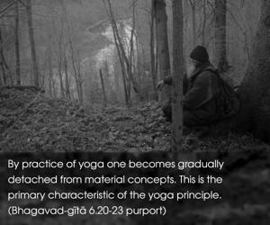
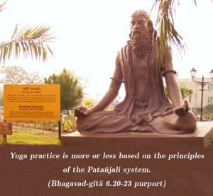

In the stage of perfection called trance, or samādhi, one’s mind is completely restrained from material mental activities by practice of yoga. This perfection is characterized by one’s ability to see the Self by the pure mind and to relish and rejoice in the Self. In that joyous state, one is situated in boundless transcendental happiness, realized through transcendental senses. Established thus, one never departs from the truth, and upon gaining this he thinks there is no greater gain. Being situated in such a position, one is never shaken, even in the midst of greatest difficulty. This indeed is actual freedom from all miseries arising from material contact.


By practice of yoga one becomes gradually detached from material concepts. This is the primary characteristic of the yoga principle. And after this, one becomes situated in trance, or samādhi, which means that the yogī realizes the Supersoul through transcendental mind and intelligence, without any of the misgivings of identifying the self with the Superself. Yoga practice is more or less based on the principles of the Patañjali system. Some unauthorized commentators try to identify the individual soul with the Supersoul, and the monists think this to be liberation, but they do not understand the real purpose of the Patañjali system of yoga. There is an acceptance of transcendental pleasure in the Patañjali system, but the monists do not accept this transcendental pleasure, out of fear of jeopardizing the theory of oneness. The duality of knowledge and knower is not accepted by the nondualist, but in this verse transcendental pleasure – realized through transcendental senses – is accepted. And this is corroborated by Patañjali Muni, the famous exponent of the yoga system. The great sage declares in his Yoga-sūtras (4.33): puruṣārtha-śūnyānāṁ guṇānāṁ pratiprasavaḥ kaivalyaṁ svarūpa-pratiṣṭhā vā citi-śaktir iti.
This citi-śakti, or internal potency, is transcendental. Puruṣārtha means material religiosity, economic development, sense gratification and, at the end, the attempt to become one with the Supreme. This “oneness with the Supreme” is called kaivalyam by the monist. But according to Patañjali, this kaivalyam is an internal, or transcendental, potency by which the living entity becomes aware of his constitutional position. In the words of Lord Caitanya, this state of affairs is called ceto-darpaṇa-mārjanam, or clearance of the impure mirror of the mind. This “clearance” is actually liberation, or bhava-mahā-dāvāgni-nirvāpaṇam. The theory of nirvāṇa – also preliminary – corresponds with this principle. In the Bhāgavatam (2.10.6) this is called svarūpeṇa vyavasthitiḥ. The Bhagavad-gītā also confirms this situation in this verse.
After nirvāṇa, or material cessation, there is the manifestation of spiritual activities, or devotional service to the Lord, known as Kṛṣṇa consciousness. In the words of the Bhāgavatam, svarūpeṇa vyavasthitiḥ: this is the “real life of the living entity.” Māyā, or illusion, is the condition of spiritual life contaminated by material infection. Liberation from this material infection does not mean destruction of the original eternal position of the living entity. Patañjali also accepts this by his words kaivalyaṁ svarūpa-pratiṣṭhā vā citi-śaktir iti. This citi-śakti, or transcendental pleasure, is real life. This is confirmed in the Vedānta-sūtra (1.1.12) as ānanda-mayo ’bhyāsāt. This natural transcendental pleasure is the ultimate goal of yoga and is easily achieved by execution of devotional service, or bhakti-yoga. Bhakti-yoga will be vividly described in the Seventh Chapter of Bhagavad-gītā.
In the yoga system, as described in this chapter, there are two kinds of samādhi, called samprajñāta-samādhi and asamprajñāta-samādhi. When one becomes situated in the transcendental position by various philosophical researches, he is said to have achieved samprajñāta-samādhi. In the asamprajñāta-samādhi there is no longer any connection with mundane pleasure, for one is then transcendental to all sorts of happiness derived from the senses. When the yogī is once situated in that transcendental position, he is never shaken from it. Unless the yogī is able to reach this position, he is unsuccessful. Today’s so-called yoga practice, which involves various sense pleasures, is contradictory. A yogī indulging in sex and intoxication is a mockery. Even those yogīs who are attracted by the siddhis (perfections) in the process of yoga are not perfectly situated. If yogīs are attracted by the by-products of yoga, then they cannot attain the stage of perfection, as is stated in this verse. Persons, therefore, indulging in the make-show practice of gymnastic feats or siddhis should know that the aim of yoga is lost in that way.
The best practice of yoga in this age is Kṛṣṇa consciousness, which is not baffling. A Kṛṣṇa conscious person is so happy in his occupation that he does not aspire after any other happiness. There are many impediments, especially in this age of hypocrisy, to practicing haṭha-yoga, dhyāna-yoga and jñāna-yoga, but there is no such problem in executing karma-yoga or bhakti-yoga.
As long as the material body exists, one has to meet the demands of the body, namely eating, sleeping, defending and mating. But a person who is in pure bhakti-yoga, or in Kṛṣṇa consciousness, does not arouse the senses while meeting the demands of the body. Rather, he accepts the bare necessities of life, making the best use of a bad bargain, and enjoys transcendental happiness in Kṛṣṇa consciousness. He is callous toward incidental occurrences – such as accidents, disease, scarcity and even the death of a most dear relative – but he is always alert to execute his duties in Kṛṣṇa consciousness, or bhakti-yoga. Accidents never deviate him from his duty. As stated in the Bhagavad-gītā (2.14), āgamāpāyino ’nityās tāṁs titikṣasva bhārata. He endures all such incidental occurrences because he knows that they come and go and do not affect his duties. In this way he achieves the highest perfection in yoga practice.